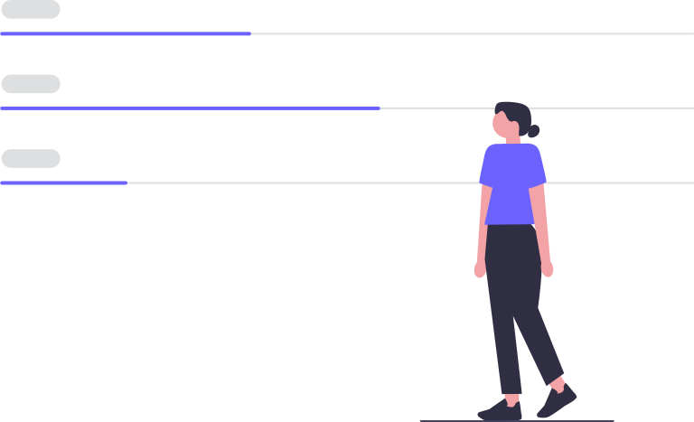
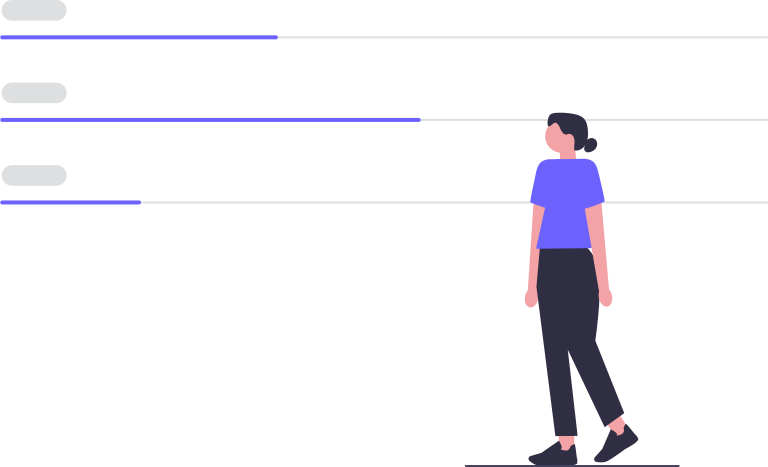

online resume builder
Only 2% of resumes make it pass the first round.Be in the top 2%
Use professional field-tested resume templates that follow that exact 'resume rules' employers look for. Easy to use and done within minutes - try now for free!
Create my resume
 
